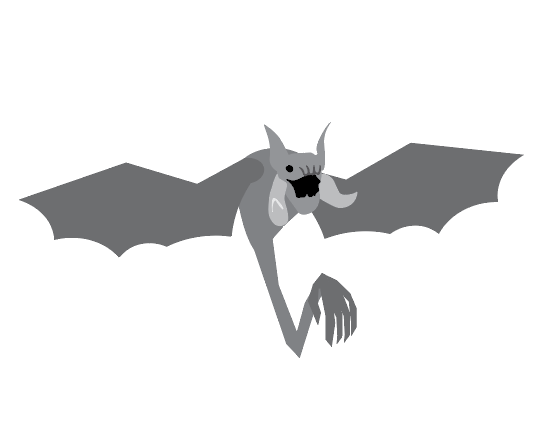
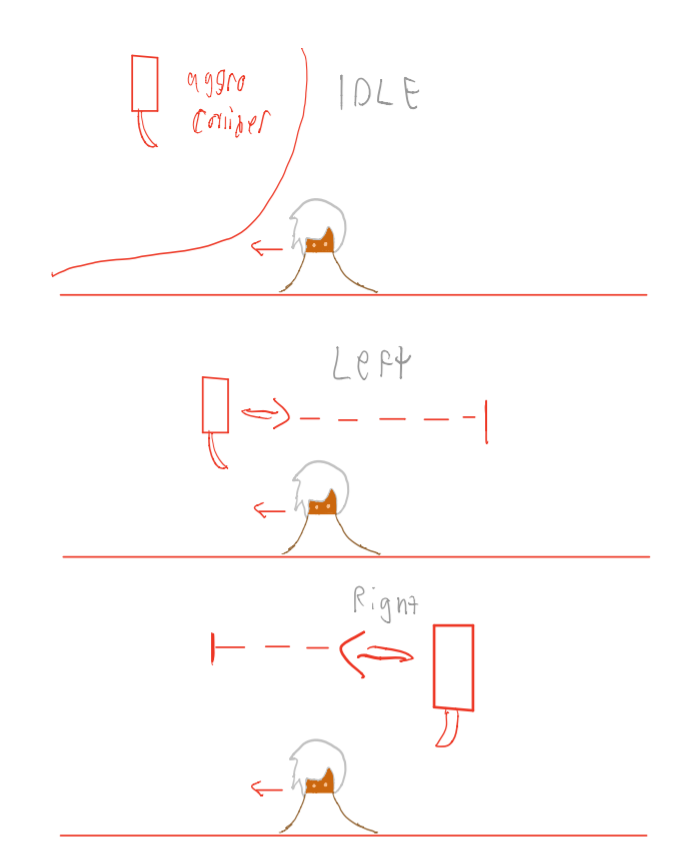
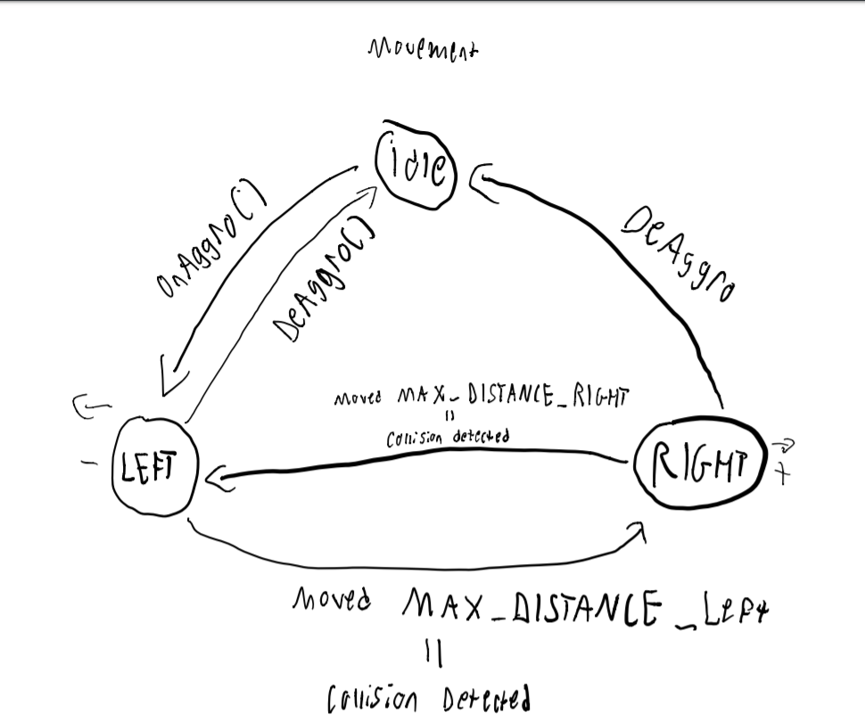
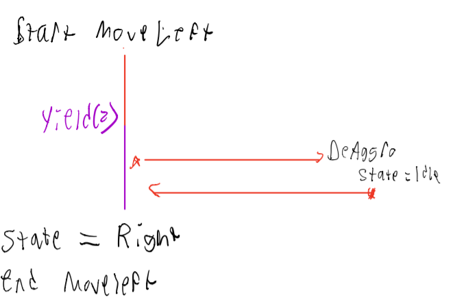
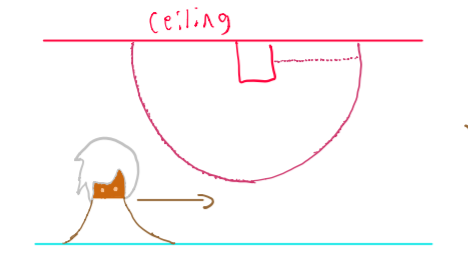
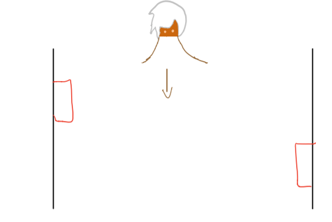
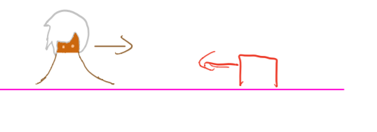
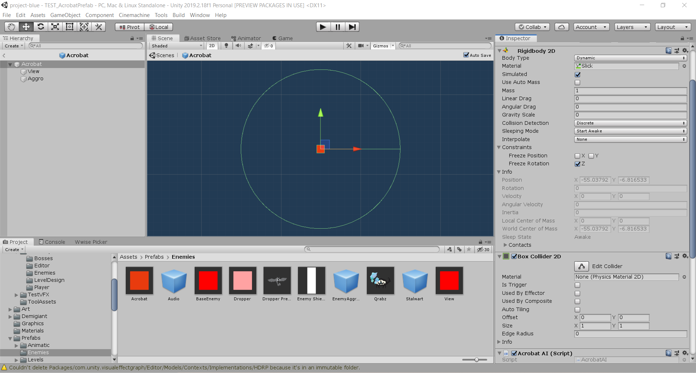

Making of the Dropper
For this development sprint, I contributed to the AI of the Dropper enemy, created a prefab for another enemy in production, and did fine tuning on the Acrobat prefab. I adjusted the acrobats properties (speed and aggro settings) so that it is at the right level of difficulty.
Dropper AI: (15 hours)
My main assignment for the past week was to develop the movement script for the Dropper enemy:
The dropper is a flying enemy that moves above the player and drops projectiles on the player. They have a simple movement pattern: they move strictly left and right on the x-axis, chaging their direction every few seconds:
To start coding the Droppers behavior, I used a similar approach to how I developeed the Acrobat, where I use a state machine to map out each of the acrobat's movement patterns. With this states, can easily convert them into code that makes the dropper move in the desired pattern:
The enemy can be in 3 states: IDLE, LEFT, and RIGHT. In the IDLE state, the enemy will take no action, waiting in anticipation for the enemy. When the player (Io) enters the enemy's aggro collider, a Unity event is called from the enemyAggro script that will transition the dropper from IDLE state to LEFT state. At this point, the dropper will move a a constant pace about the x-axis (the initial direction of the player) for a either a 2 seconds or until it collides with an object in the environment. At this point, the dropper then transitions to the RIGHT state, and will move in the opposite direction for 2 seconds. The script can be modified to make the dropper move in a particular direction for a longer period of time, or be programmed to change directions upon traveling a certain distance. If the player exits the enemy's aggro collider, a DeAggro event is triggered from the enemyAggro script which ends the dropper's movement and returns them to the IDLE state.
While developing this enemy's movement, I ran into a few interesting issues. Firstly, I noticed that if the player exits the enemy's aggro collider, then enters it again, the dropper will move away from the player. This was caused due to my assumption that the player would continue to move right after killing the dropper or ignoring it. In order to make this less awkward, I modified the script so that it could detect the direction the player entered the dropper's collider. In this way, the script could then trigger the state the corresponds to the player's current direction, and move towards them.
Another issue I faced dealt with the timing of the coroutine functions as the DeAggro event was being triggered. For this script, I utilized coroutines to execute the dropper's movement. Coroutines are functions which execution can be paused for a specified period of time, during which execution control is returned to Unity. Normal functions must have all its instructions be executed before returning. With coroutines, the dropper can move in a single direction across multiple frames before moving in the oppoiste direction.
The issue with the DeAggro event was that if another coroutine was waiting to return at the same time the DeAggro function was executing, it could overwrite the change to state (IDLE) the DeAggro event causes. This results in the dropper continuing to move in the opposite direction, despite the player having exited the enemy's aggro range.
In order to fix this issue, I used a function in Unity's library called "StopAllCorountines()" which deactivates any coroutines that may be still running by the time the DeAggro event is triggered. If there happens to be no coroutines running, "StopAllCorountines()" does nothing. The inclusion of this function fixed the issue, and guarantees that no other coroutine overwites the state transition to IDLE.
Acrobat Design: Tuning behaviors (10 hours)
My next assignment with the Acrobat was to fine tune the acrobat prefab. I had to determine what the right level of difficulty should be for the acrobat; I adjusted its prefab properties in order so that the acrobat's interactions with the player are fair and balanced. In addition, I had to figure out what the right level placements for an acrobat enemy should be.
Starting with the level layout, I drew out several possiblities and assessed how ideal they would be in the final game. My criteria for idealness are: What placement would allow for the enemy to most effectively challenge the player? Which placement makes since given the implmentation of the Acrobat's AI script, and the design specification?
- The enemy is attached to a ceiling which hangs below the player. This is the placement initially proposed in the acrobat's design specification. 
- The enemy could be attached to walls side by side, and can essentially be used to ambush a player as their fall down a long corridor. 
- The acrobat could be placed at the same level as the player, and attack them face to face.
I determined that the best acrobat placement would be 1). This made the most sense given the intial design of the Acrobat, which aimed to create an enemy which promoted player anticipation and movement. By having the enemy on the ceiling, it would prompt the player to be alert of their surrounds, and to ready their reflexes in order to antipate an attack. This placement would also allow for multiple acrobats to placed in groups, and ing the player to defeat groups of enemies using the warping mechanic. 2) Would not work as well: The acrobat's would only have one attempt to attack the player before it reaches the end of the corridor. It also does not present a challenge to the player, in that they would be able to skip the encounter without using the weapon teleportation mechanic. 3) Is not ideal. The Acrobat's repose would not work: if the player is heading towards the acrobat, the next avaliable wall to repose from would be too far away. In other words, the player could simply jump over the acrobat, and skip the fight encounter entirely. There is also an issue with grouping acrobats with this placment. if all the acrobats are side to side with this placement, then they are more likely to collide with each other, and create akward fight encounters with the player.
To further tune the enemy, I adjusted several properties of its prefab:
- The gravity scale and drag properties on the prefab's rigidbody were set to 0. This allows for the acrobat to not be effected by gravity while it hangs on the wall, and lerps to attack the player's recent location.
- The cooldown timers that delay the transtion from an acrobat's attack and repose were both set to 2 seconds. I found these settings were the best so that the enemy could still aggressively attack the player, bbut give them enough time to react.
- On the Aggro child object, I set the circle collider's radius to 10. This was the most ideal setting for having acrobats grouped together in large, open spaces. For tighter spaces, the designers will be able to lower the aggro range as they see fit.
Overall, I felt these changes would make the acrobat a more effective enemy. However, playtesting is necessary to see how the player interacts with the enmy. From there, more precise changes can be made to the prefab in order to balance its difficulty.